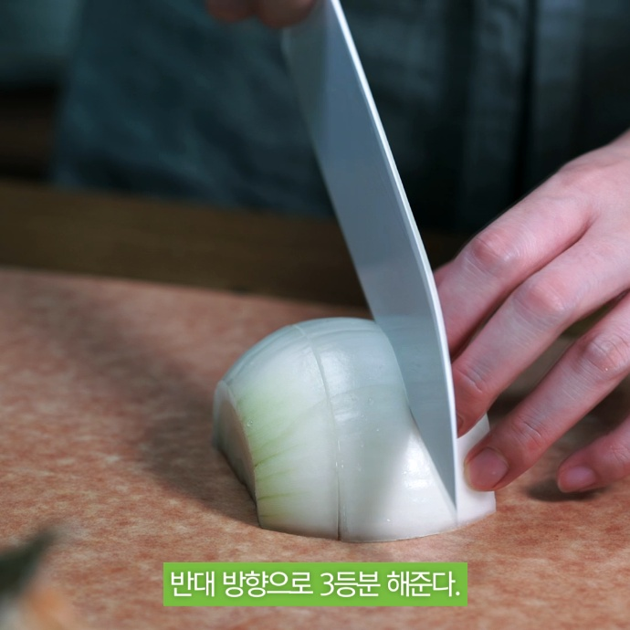
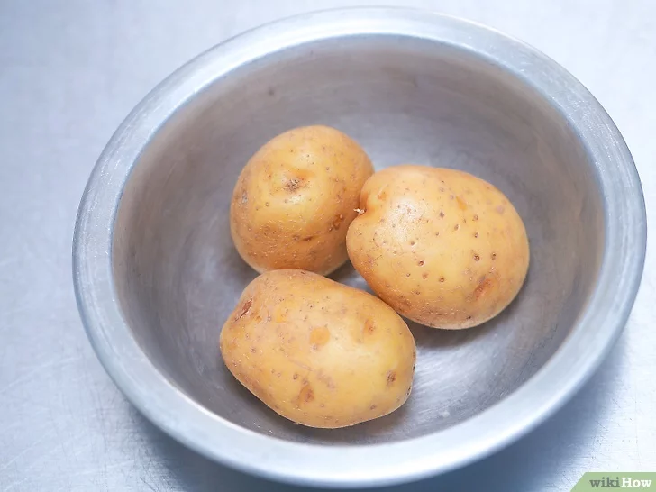

당근 손질법

흐르는물에 세척
편썰기(무침, 볶음용)
곱게다지기(볶음밥용)

굵직하게 다지기(카레용)
링썰기(샐러드용)
채썰기(잡채, 볶음용)
모서리깍기(찜용)
원하는대로 손질하세요!
양파 손질법

뿌리와 싹을 잘라내고 겉껍질을 벗겨낸다
물에 깨끗이 씻는다
양파를 세워 이등분

끝부분을 남기고 결을 따라 칼집을 넣는다
옆으로 돌려 가로로 칼집을 넣는다
볶음밥용 손질 완성
채썰기
곁 방향으로 채 썬다
사각썰기
곁 방향대로 4등분

반대 방향으로 3등분
보관방법
감자 보관법

껍질이 벗겨졌거나 멍이 들었거나 또는 상처가 있는 감자들을 골라냅니다
어둡고 건조한 곳에 보관합니다
선선한 곳에 보관합니다

상한 감자는 없는지 종종 확인합니다
시원하고 어두운 장소에 신문지를 펴고 감자를 널어놓습니다
보관하기 전에 감자를 씻지 마세요

냉장고에 감자를 보관하지 마세요

감자를 잘라서 보관하지 마세요

과일과 함께 보관하지 마세요
야매요리 - 김밥
당신도 요리할 수 있다! 유후~~